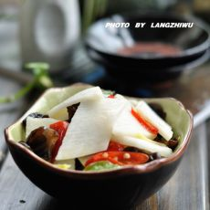
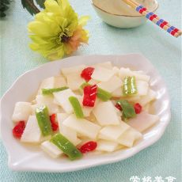
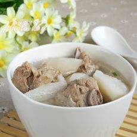
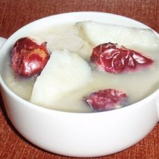
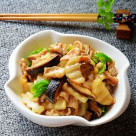
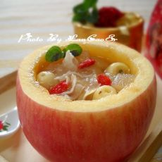
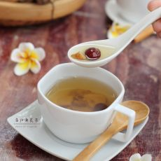
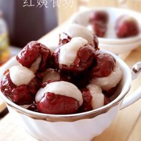
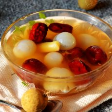

关于气虚质的菜谱
清炒山药片

山药又渐渐的开始上市了，价格也不高，但现在的山药应该是最新鲜的了。
山药具有健脾益肺、固肾益精等多种功效，营养丰富，被称为物美价廉的补虚佳品。
山药的吃法很多，煮汤，煲粥，凉拌，炝炒都合适。
清炒山药片

山药具有具有健脾补肺、益胃补肾、固肾益精的功效。这菜对脾胃虚弱、倦怠无力、食欲不振等症状均有较好效果。山药内含淀粉酶消化素，能分解蛋白质和糖，有减肥轻身的作用。对于体瘦者，山药含有丰富的蛋白质以及淀粉等营养成分，又可增胖。
山药排骨汤

山药营养丰富，自古以来就被视为物美价廉的补虚佳品，将之与排骨一起炖，就成了一道十分美味的汤。
山药又叫薯芋、薯药、延章、玉延等。我国食用山药已有3000多年的历史，自古以来，它就被誉为补虚佳品，备受称赞。据现代药学分析，山药含有丰富的淀粉、蛋白质、无机盐和多种维生素(如维生素B1、维生素B2、烟酸、抗坏血酸、胡萝卜素)等营养物质，还含有多量纤维素以及胆碱、粘液质等成分。山药最大的特点是能够供给人体大量的粘液蛋白。这是一种多糖蛋白质，对人体有特殊的保健作用，能预防心血管系统的脂肪沉积，保持血管的弹性，防止动脉粥样硬化过早发生，减少皮下脂肪沉积，避免出现肥胖。所以，山药是一种非常理想的减肥健美食品。欲减肥者可以把山药作为主食，这样既可避免因节食对人体功能造成不良影响，又利于达到减肥目的。
小米红枣山药粥

春天是养肝的好季节。
中医认为大枣、山药最宜于春季食用，山药味甘性平，具有健脾养肝、滋肺益气、补肾固精等功效，可用枣、山药与大米、小米、煮粥食用，以健脾养肝益胃，滋阴润燥。
常食小米对于气血两虚、脾胃虚弱十分有益；红枣补气健脾；山药补脾健胃，润肺滋肾。小米红枣山药粥治疗脾虚乏力效果很好。
香菇山药炒肉片

这是一道非常适合冬季食用的滋补家常菜，尤其适合手脚冰凉者。
山药营养丰富，含有多种营养素，有强健机体，滋肾益精的作用。
打算冬季进补的人，进补之前可以吃点山药，有利于补品的吸收。
而新鲜块茎中含有的多糖蛋白成分的黏液质、消化酵素等，可预防心血管脂肪沉积，有助于胃肠的消化吸收。
把山药和香菇肉片一起搭配，使其营养更加丰富，健脾胃，益气血，适合女性和体虚者食用。
苹果莲子炖银耳

苹果有“智慧果”、“记忆果”的美称。人们早就发现，多吃苹果有增进记忆、提高智能的效果。苹果不仅含有丰富的糖、维生素和矿物质等大脑必需的营养素，而且更重要的是富含锌元素。据研究，锌是人体内许多重要酶的组成部分，是促进生长发育的关键元素。能够提高人体免疫力。
苹果银耳羹，苹果有生津、润肺，除烦解暑、开胃醒酒、止泻的功效；银耳既有补脾开胃的功效，又有益气清肠的作用，还可以滋阴润肺、长期服用可以润肤，并有祛除脸部黄褐斑、雀斑的功效。
当归黄芪茶

又一款美容茶，有补血养血的功效。
当归是好东东，既补血，活血，又能调经，用于血虚或血虚而兼有瘀滞的月经不调，痛经，经闭等症。
黄芪是中医临床常用药， 味甘，性微温。归脾、肺经。具有补气升阳、益卫固表、托疮生肌、利水退肿等多种功效。
在煮的时候，加上几颗红枣，每个星期坚持喝两到三次，血气肯定会很好，血气好了，脸上的斑都会变淡，坚持下来，个个都会变美女......
女人要“枣”补气血—蜜枣银心

巧手大餐菜........
这款“蜜枣银心”有的地方也叫“心太软”，具有美容，抗衰老作用的大枣，加上黏黏的糯米粉和白糖，红色的外表，包裹着白色的心儿，味道甜美，造型新颖。令人不得不拿起筷子尝尝。
花一点心思，平凡中见别致，家庭餐桌上也可以出现餐馆上的大餐，渗透的浓浓爱意的美食，在家享受星级版得豪华盛宴。
姜枣桂圆汤

大寒是冬季最后一个节气，也是二十四节气中最后一个，开始于每年公历的1月20-21日。
大寒的到来预示着春天的临近，为了有一个良好的状态来迎接万物复苏的春天，在大寒的时节，我们除了忙着办年货，迎接新年外，还要因该注意进补，正如民谚所说：大寒大寒，防风御寒早喝人参，黄芪酒，晚服菊杞地黄丸。
也就是说大寒时节需要补气血以养脏腑，要多吃健脾，护胃，益气的食物调养脾胃。
桂圆不仅可以抵御风寒，还能帮助人体更好地适应春天的生发特性，因此非常适合在大寒时节食用。
另外，香甜的红枣也是极佳的驱寒食物。
此款养生汤，可驱寒发热，益气补虚，健脾养胃，适合手脚冰凉，脾胃虚寒者食用。